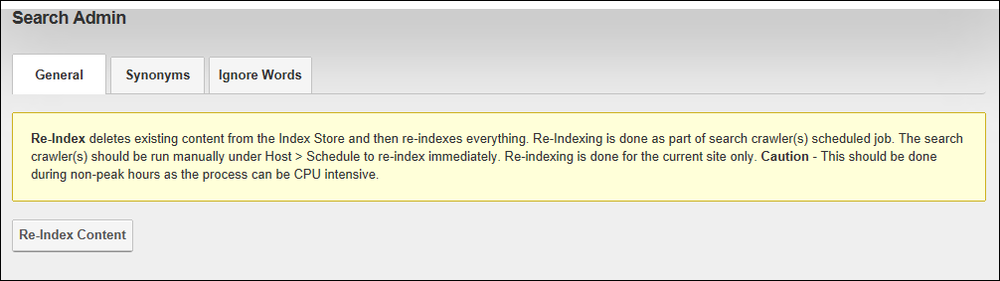

Search Admin, located on the Admin > Advanced Settings > Search Admin page, enables Administrators to specify the settings associated with DNN's search capabilities. Search Admin enables search content to be re-indexed if there has been significant changes since the last indexing, manage synonym lists and select words to be ignored in searches.

Search Admin